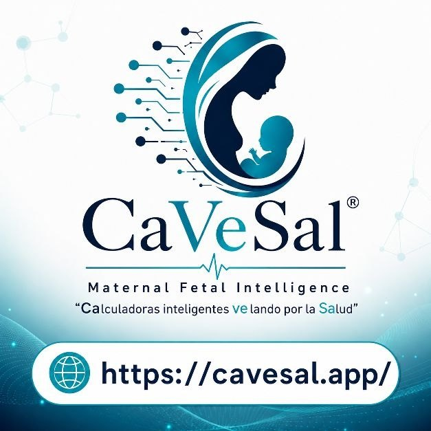
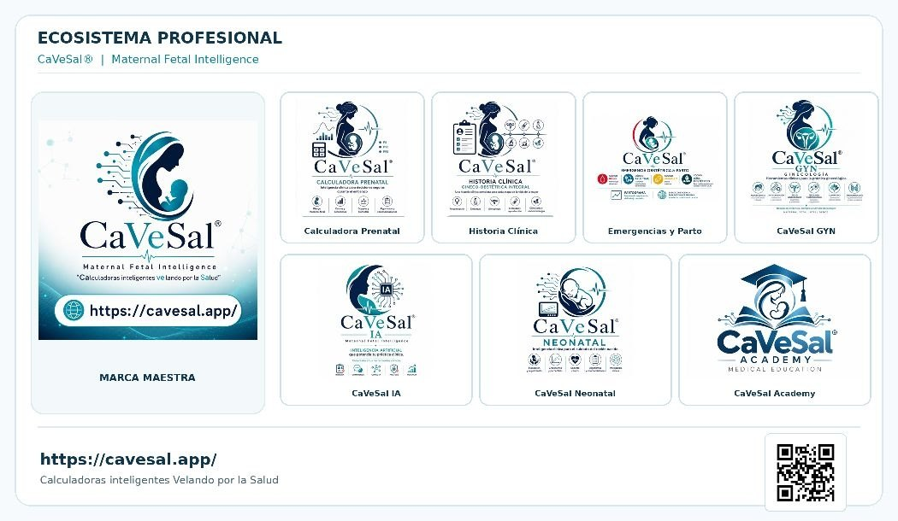

CaVeSal® — Maternal Fetal Intelligence

Tutoriales
Ecosistema profesional

Invitá a tu paciente
Dos apps gratuitas del ecosistema CaVeSal, según el momento de cada paciente, más el ecosistema completo.
Estas Aplicaciones orientan a la paciente y la acercan a su médico — no reemplazan su criterio.
Autor clínico
Formación en Medicina Materno-Fetal. Metodología FMF/Nicolaides y guías: ACOG, FIGO, NICE, IADPSG, ATA, WHO, EBCOG, Medicina Fetal Barcelona.
- Título de grado Médico y Cirujano (Paraguay) con homologación al título de grado español Licenciado en Medicina.
- Especialista en Ginecología y Obstetricia.
- Postgrados en Ecografía General y Gineco-Obstétrica, Endocrinología Ginecológica y Reproductiva, Didáctica en Educación Superior y Salud Pública.
- Formación en Inteligencia Artificial y herramientas digitales emergentes aplicadas a la práctica profesional.
- Capacitador Nacional en Salud Sexual y Reproductiva, Código Rojo y Atención Prenatal.
- Miembro del Comité Técnico Nacional de Inmunización (Paraguay).
- Docente universitario de grado y posgrado en Ginecología y Obstetricia, Ecografía, Endocrinología Ginecológica y Reproductiva.
- Miembro del Comité Científico de FLASOG (2024–2026).
- Miembro de Sociedades Científicas en Paraguay (FPGO, SOGON, SOGIA, SODIAP y SEGIRP).
- Presidente de la FPGO (2023–2026).
Bases clínicas
Cada módulo cita sus fuentes en la propia ficha. Tocá un módulo para ver sus referencias completas.
Guías
- Código Rojo — Hemorragia
- Código THAE — Hipertensión
- Código Amarillo — Sepsis
- Código Azul Obstétrico — RCP
- Tromboprofilaxis — Semáforo
- Distocias — Hombros y Pelviana
- RPM — Rotura Prematura de Membranas
- APP — Amenaza de Parto Prematuro
- Hiperémesis Gravídica — PUQE
- Progreso de Parto — Prevención de Cesárea
- Hemorragias 1ª Mitad — Aborto, Ectópico, IIC/Cerclaje
- Hemorragias 2ª Mitad — DPPNI, Placenta Previa, Rotura, Vasa Previa
- Puerperio Normal
- Lactancia y Mastitis Puerperal
- Modelo ICT y Reanimación — Código Rojo ABCDE
- Vía del Parto — Robson, Bishop, Biometría
Calculadora
Aviso legal
CaVeSal® es una herramienta de apoyo clínico para profesionales de la salud capacitados. No reemplaza el juicio clínico del médico tratante ni la evaluación individualizada. Todas las decisiones clínicas son responsabilidad exclusiva del profesional de la salud.
Propiedad intelectual: CaVeSal® organiza de forma original, en guías de acceso rápido y calculadoras, las clasificaciones, escalas y recomendaciones de las referencias citadas en cada ficha. Algunas tablas se reproducen textualmente o traducidas de su fuente original; en cada caso se indica la cita completa. Las referencias a publicaciones científicas tienen fines exclusivos de atribución académica y validación clínica.
El software, el diseño, la interfaz, los textos, los gráficos y la lógica de esta aplicación son propiedad de Dr. Carlos Vera Salerno y están protegidos por la Ley N.º 1328/1998 de Paraguay y los tratados internacionales aplicables (Convenio de Berna). CaVeSal® es una marca registrada. Queda prohibido copiar, reproducir, distribuir, modificar, descompilar, realizar ingeniería inversa, divulgar por cualquier medio, o crear obras derivadas de esta aplicación o de cualquiera de sus componentes, total o parcialmente, sin autorización previa y por escrito del titular. Cualquier uso no autorizado podrá dar lugar a las acciones legales correspondientes.
La mención de guías, sociedades científicas o instituciones (OMS, OPS, UNFPA, FIGO, ACOG, RCOG, NICE, SMFM, ISSHP, SOMANZ, CMQCC, MSPBS Paraguay, Surviving Sepsis Campaign, FLASOG, Medicina Fetal Barcelona, Universidad de Antioquia, entre otras) tiene fines exclusivamente de atribución bibliográfica. Ninguna de estas instituciones patrocina, avala ni certifica CaVeSal®.
La mención de sociedades científicas y guías clínicas en este perfil y en la aplicación (FMF, ACOG, FIGO, FPGO, FLASOG, entre otras) tiene fines exclusivamente de atribución académica y bibliográfica. Ninguna de estas instituciones patrocina, avala ni certifica CaVeSal®.